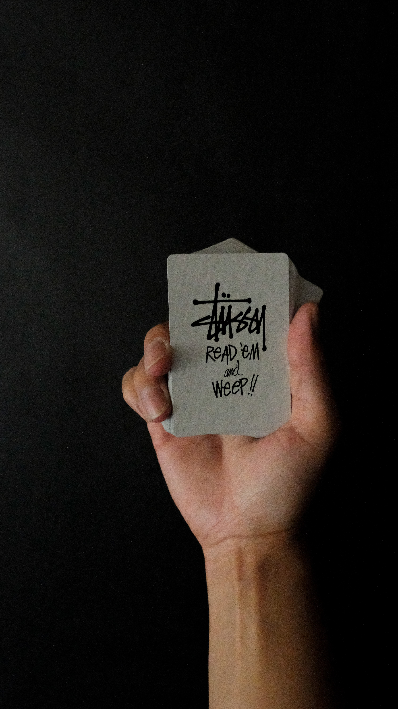

첫 시작은 서핑보드 광이었던 숀 스투시가 직접 만든 서핑보드에 저 로고를 슥 그려넣어서 판 게 시작이었다. 그는 곧 자기가 입고다닐 겸 해서 티셔츠 등에도 그 사인을 박아넣어 팔았고, 이는 해변가에서 대성공을 거뒀다. 이는 곧 언더그라운드 힙합 씬에서도 유행을 탔고, 이는 힙합과 서프의 조합이라며 패션계에 센세이션을 불러일으켜 그는 말 그대로 세계적인 대박을 치게 된다. 다만 그렇게 유행을 타면서 언더그라운드 패션과는 거리가 크게 벌어졌다. 숀 스투시 또한 경영권을 친구에게 넘기고 사임하여 지금에 이르고 있다.
